“I can’t picture it.”
Clients see a square swatch online, then a full slab in the showroom. Scale, veining and finish rarely match the photograph, so confidence only arrives in person.
Task 03 — Mobile app prototype · Case study
How I designed an end-to-end mobile experience for architects and private clients to discover natural stone, specify a finish, order a sample box and book time with a material advisor — then tested it until every path held together.
Why natural stone, and why mobile.
Task 03 asked for user flows, high-fidelity screens, an interactive prototype, testing and refinement. I chose a subject where the decision is tactile, expensive and hard to picture: choosing natural stone.
Stone is one of the few interior decisions a client cannot judge from a screen alone. Colour shifts with light, a honed finish reads completely differently to a polished one, and the price is usually quoted per square foot long after the first conversation. Yet the buying journey still runs through showroom visits, PDF catalogues and long WhatsApp threads.
I designed Surfaces Atelier as a mobile-first material library for a fictional Jaipur stone atelier. It treats the phone as the first showroom: browse the slab, understand the specification, request a physical sample, and only then speak to a person. The product is deliberately calm — the stone supplies the colour, the interface supplies the structure.
Three frictions I kept hearing in the category.
Clients see a square swatch online, then a full slab in the showroom. Scale, veining and finish rarely match the photograph, so confidence only arrives in person.
Architects shortlist across suppliers using screenshots, notes and memory. There is no shared record of the finish, batch or price attached to a decision.
Requesting a sample is informal and slow — a message, a callback, an address exchange. The moment of excitement is lost before the box arrives.
Turn browsing into a specification, and a specification into a sample box or a conversation — without leaving the phone.
Two users with the same goal, different pressure.
“I need the exact finish, the price and a sample — before my client meeting on Thursday.”
Design need: speed, a project-level record, and sample logistics she can trust.
“We know the feeling we want. We don’t know what it’s called or what it costs.”
Design need: plain language, visual confidence, and a human to talk to.
What the prototype had to prove.
What I fixed so the prototype could be judged on the experience.
No backend. Catalogue, samples, saved surfaces and bookings persist in local storage.
Twelve surfaces across marble, travertine, porcelain, terrazzo and onyx — enough to test search, filters and pairing.
Designed at 390 × 844 with safe areas, then presented inside a desktop review shell.
Self-contained HTML, CSS and JavaScript so an interviewer can open it and use it immediately.
Pexels stone imagery stands in for studio photography, with graceful fallbacks if a request fails.
The account is pre-filled as Ananya Kapoor so the prototype can show a populated studio without a login flow.
Four tabs, six overlays, one continuous story.
The tab bar holds the four places a client returns to. Everything else is a focused overlay with a clear way back.
Each one maps to a real intention, with its own edge cases.
The primary conversion path. A visitor discovers a surface, checks the specification, chooses a finish, builds a box of up to five samples and sends a request.
A returning trade client knows roughly what she wants. The path optimises for speed: search, open, save, then collect the scheme into a project moodboard.
For clients who need guidance before specifying. A short, gated booking flow that only enables confirmation once a date and a time are chosen.
A restrained kit so the material carries the colour.
Eleven high-fidelity screens, captured from the live prototype.
Every screen below is a real capture at 390 × 844 — not a static mockup. Open the prototype to use the same states.
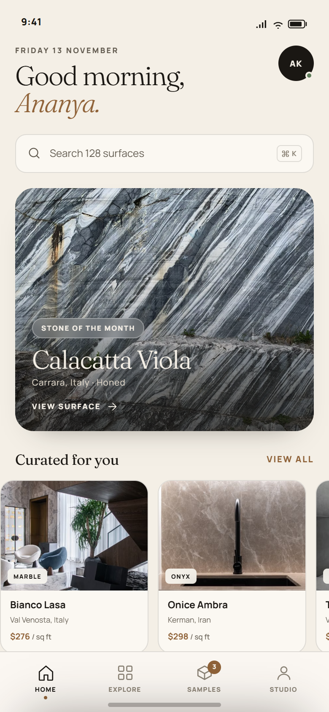
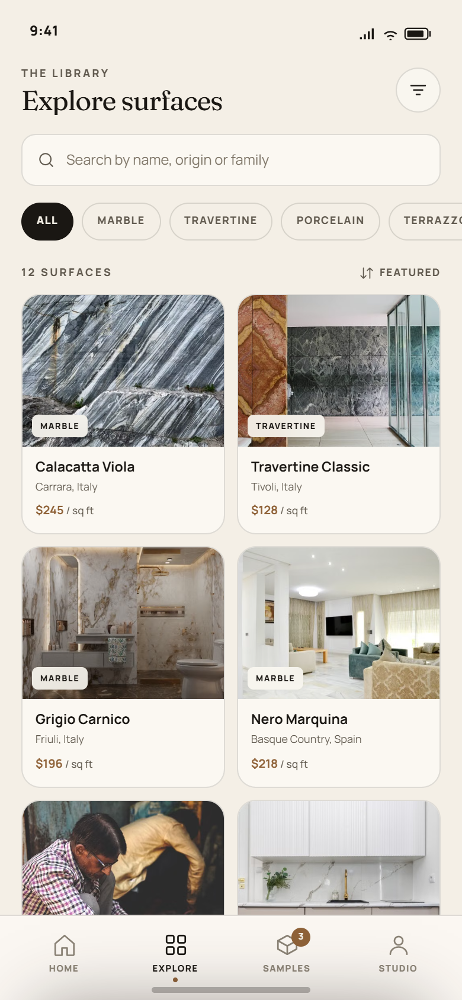
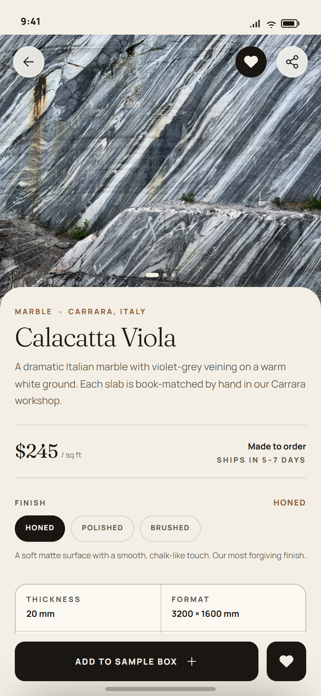
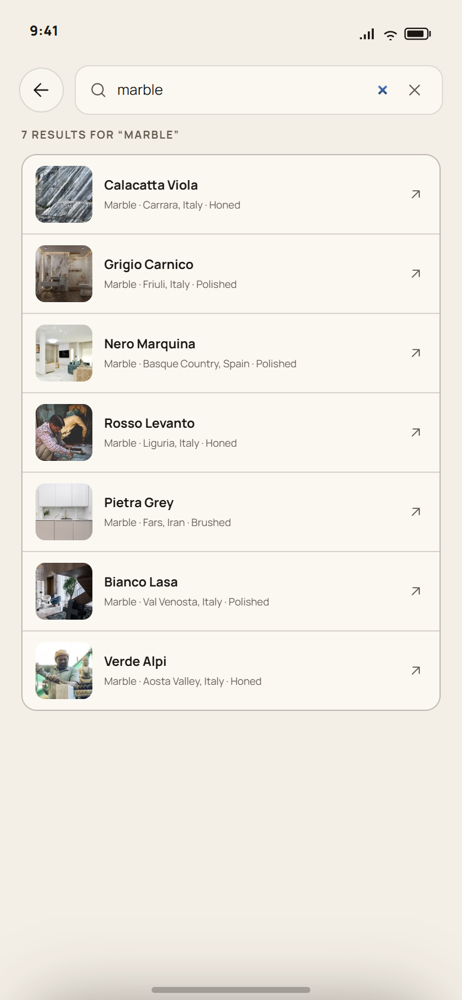
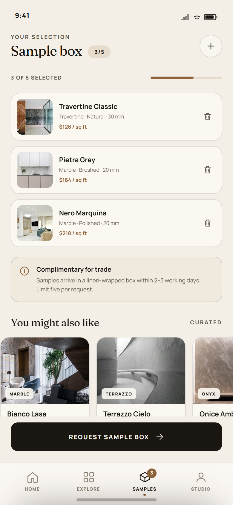
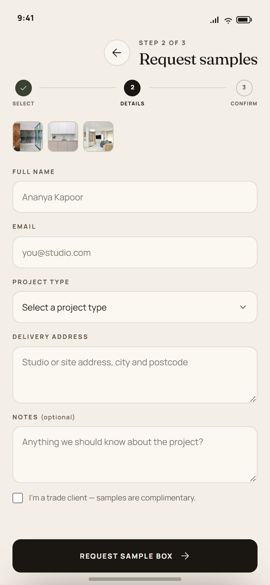
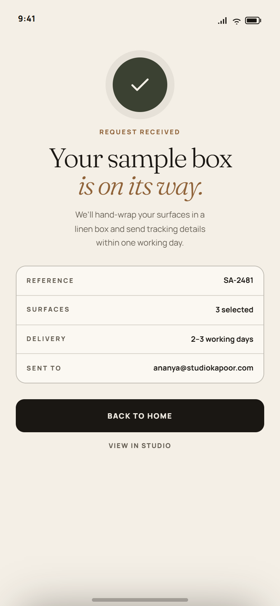
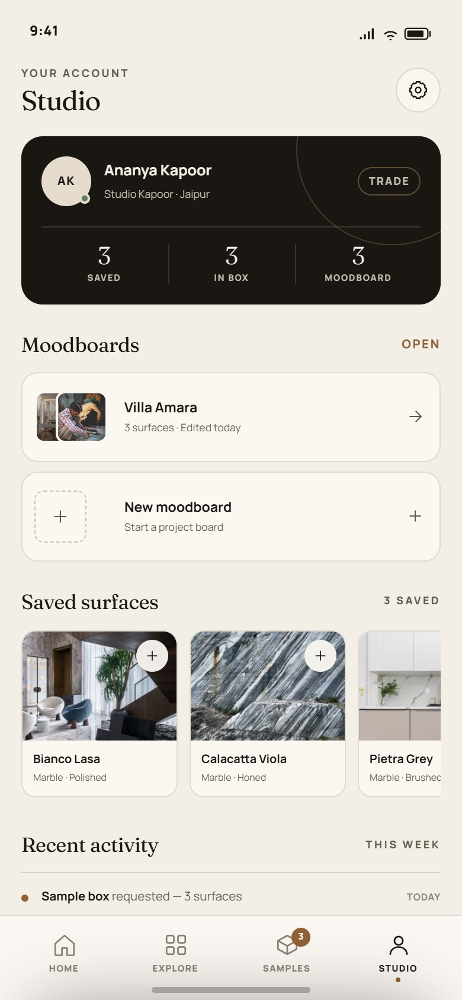
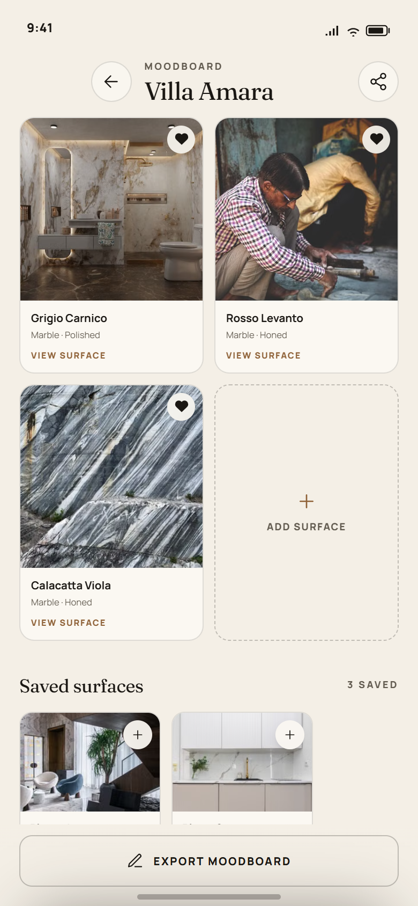
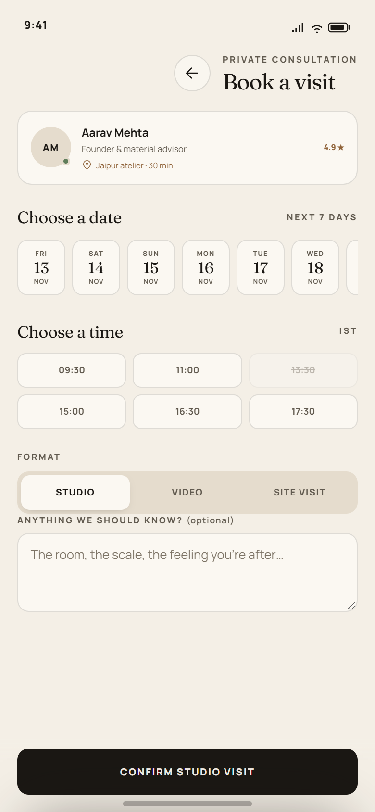
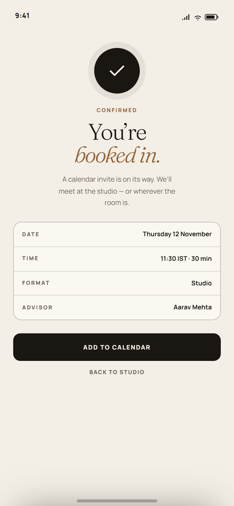
The prototype is stateful, not a slideshow.
Query, family chips, four sort orders and a filter sheet combine into one result set. Recent searches are remembered and escaped.
The sixth add is blocked with a clear toast. Badges, header counts, empty and full states stay in sync.
Required fields show a specific message, an invalid state and a focus jump — no browser-native alert bubbles.
Confirmation stays disabled until a date and time are chosen. Unavailable slots are struck through and non-selectable.
Saved surfaces collect in the studio and moodboard. Add, remove and empty states are all handled.
Surface and moodboard summaries copy to the clipboard; the board exports as a standalone HTML document.
Confirmation downloads a valid .ics file with the chosen date, time, format and advisor.
State survives refresh through local storage. Reset restores the demo without a reload.
What broke, what changed, and how I verified it.
I tested the prototype with Playwright at desktop, tablet and mobile widths, plus a manual pass on Chrome. Each finding produced a change rather than a note.
| Area tested | Issue found | Refinement |
|---|---|---|
| Sample limit | A sixth surface could be added from the detail screen. | Centralised the add rule and blocked it with a specific toast. |
| Request form | Native validation gave no guidance on what was wrong. | Added per-field messages, invalid states and focus jump. |
| Moodboard | An empty board rendered as a blank grid. | Added an empty state with a direct route to the library. |
| Search | Recent searches were hard-coded and could inject markup. | Persisted real recents and escaped every rendered value. |
| Booking | Format could change after confirmation without feedback. | CTA label reflects the chosen format; summary reads the same state. |
| Responsive shell | Rails squeezed the phone between 980 and 1240 px. | Collapsed rails at 1240 px and went full-screen at 760 px. |
| Share / export | Actions only showed a toast and did nothing. | Wired clipboard copy, HTML export and a real .ics download. |
The first draft treated finish as a label. Users needed to see the decision change, so finish became a selectable control with a live note and price context.
Detail screen, rebuiltA counter alone did not communicate the limit. The progress bar, header badge and blocked sixth add now tell the same story in three places.
Sample box, clarifiedEarly success screens were celebratory. The final version is quiet: a reference, a delivery window and one clear way home.
Tone, refinedEmpty box, full box, no results, invalid form, no date, unavailable slot. Each edge case now has a designed response instead of a dead end.
States, completedSmall decisions that keep the prototype usable.
Header, nav, main and labelled sections; one h1 per page.
Brass focus rings, keyboard support for cards and Escape to close overlays.
Toasts use aria-live; invalid fields set aria-invalid and a message.
The filter sheet is a labelled modal with a backdrop and close control.
Transitions and smooth scrolling are disabled under prefers-reduced-motion.
AA body text and 44 px minimum touch targets across controls.
Screenshots and cards reserve space; images are lazy-loaded below the fold.
Fonts preconnect, one stylesheet, one script, and a static server for review.
What I would carry into a product team.
The hardest part was not making stone look beautiful. It was deciding when the interface should get out of the way — and when it owed the user one more clear sentence.
Ananya’s journey set the bar for every screenFive moderated sessions with architects and private clients, measuring time to first sample and confidence in the specification.
Replace local data with a CMS and real inventory, including live batch availability and lead times.
Client sharing, comments, room-level groupings and a true PDF export.
Instrument search → detail → box → request, and treat empty or blocked states as first-class events.